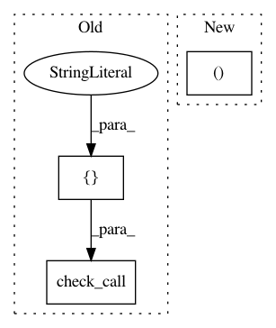

ef24b500a80a7536beedcc63529a1999101a4ac4,mltsp/run_in_docker_container.py,,build_model_in_docker_container,#Any#Any#Any#,171
Before Change
"\n\ndocker container stderr:\n\n", str(stderr), "\n\n")
// copy all necessary files produced in Docker container to host
cmd = [
"docker", "cp",
"%s:/tmp/%s_%s.pkl" % (container_name, featureset_key, model_type),
cfg.MODELS_FOLDER]
//status_code = call(cmd, stdout=PIPE, stderr=PIPE)
//print os.path.join(
// cfg.MODELS_FOLDER,"%s_%s.pkl"%(featureset_key, model_type)),
// "copied to host machine - status code %s" % str(status_code)
check_call(cmd)
print(os.path.join(
cfg.MODELS_FOLDER,
"%s_%s.pkl"%(featureset_key,model_type)), "copied to host machine.")
print("Process complete.")
After Change
// Instantiate Docker client
client = Client(base_url="unix://var/run/docker.sock")
// Create container
cont_id = container_name = client.create_container(
"mltsp/build_model",
volumes={"/home/mltsp": "", "/Data": ""})["Id"]
print(cont_id)
In pattern: SUPERPATTERN
Frequency: 3
Non-data size: 3
Instances
Project Name: cesium-ml/cesium
Commit Name: ef24b500a80a7536beedcc63529a1999101a4ac4
Time: 2015-02-27
Author: a.crellinquick@gmail.com
File Name: mltsp/run_in_docker_container.py
Class Name:
Method Name: build_model_in_docker_container
Project Name: 10XGenomics/cellranger
Commit Name: e5396c6c444acec6af84caa7d3655dd33a162852
Time: 2018-03-16
Author: paul.ryvkin@10xgenomics.com
File Name: tenkit/lib/python/tenkit/tabix.py
Class Name:
Method Name: sort_vcf
Project Name: pyinstaller/pyinstaller
Commit Name: 39f8d2da9b3de8d0e2d11ad7d5b736a760fd4c11
Time: 2016-02-22
Author: garth@garthy.com
File Name: PyInstaller/building/api.py
Class Name: EXE
Method Name: assemble